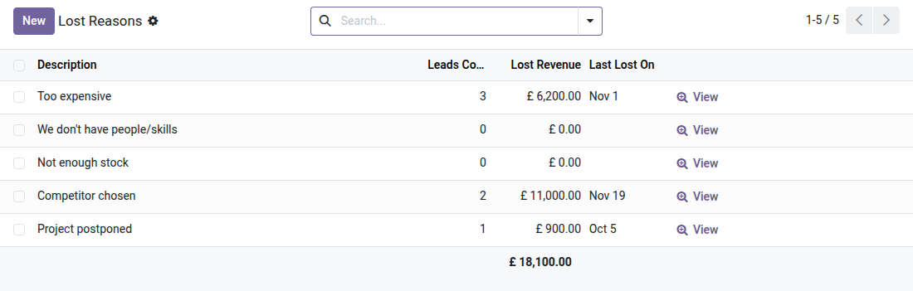
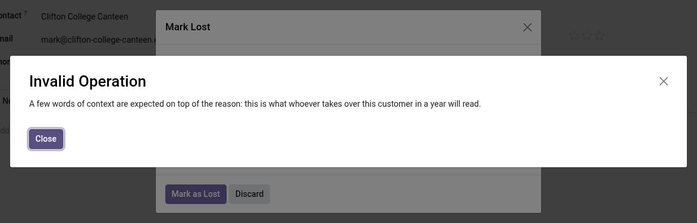
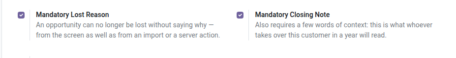

No opportunity lost without a reason, and what each reason really costs.
In Odoo, the lost reason is optional: the wizard shows it, nobody is required to fill it in. Six months later, half of the lost pipeline has no explanation, and the question "why are we losing?" has no answer in figures. The core does count opportunities per reason — but it does not say what each one takes away.
Lost revenue and date of the last loss for each reason, with the total at the bottom: here the competitor costs more than the price.

The reason is chosen but the note is empty: closing is refused, and the message says why.

Reason required, closing note required: each one is enabled separately in the CRM settings.

Knowing why you lose is a start; avoiding the loss comes next. The OdooSkills range offers detection of dormant opportunities, separation of portfolios between sales teams, quotation approval and salesperson commissions. Full catalog: apps.odooskills.com.
LGPL-3 license — compatible with Odoo 18.0 Community and Enterprise. Support: apps@odooskills.com.